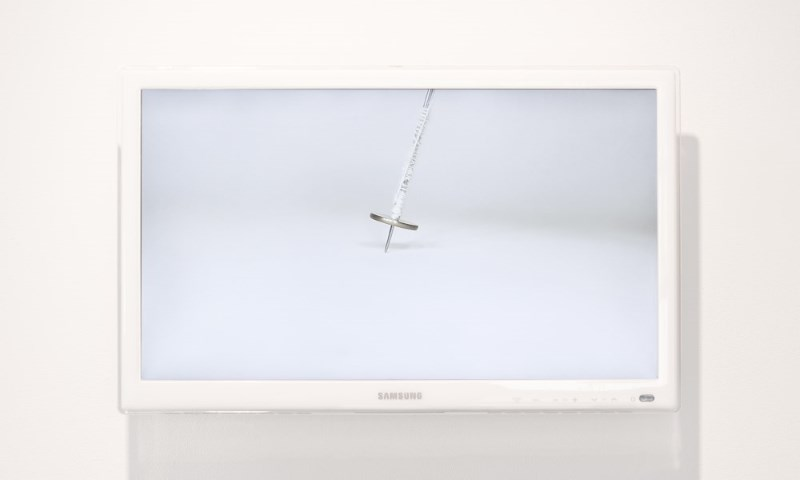
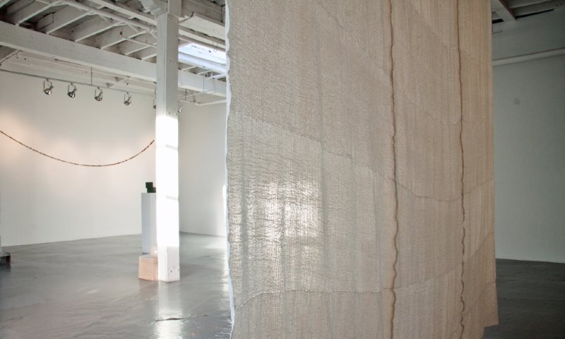

5 minutes excerpt from 38 minutes of real time video recording of spinning
All I Have is Time
2015, 38 minutes real time video recording of spinning and fabric installation
My search for the simplest action that creates something tangible through time led me to the acts of spinning and weaving.
In 2014, I visited Korea for the first time since I left there in 2002. I told my mother about the spinning and weaving project and my mother showed me an old cotton bedding that my grandmother gave her when she got married. She hardly used it partly because she cherished it and partly because the cotton bedding was soon out of fashion. She kept it in her closet for more than 40 years.
I brought it when I came back to Canada and spun threads from it and weaved the threads into fabric for about a year. I learned how to spin and weave from YouTube.
I recorded the spinning in realtime video, which is about 40 minutes, the duration to produce a skein on the spindle.
In 2014, I visited Korea for the first time since I left there in 2002. I told my mother about the spinning and weaving project and my mother showed me an old cotton bedding that my grandmother gave her when she got married. She hardly used it partly because she cherished it and partly because the cotton bedding was soon out of fashion. She kept it in her closet for more than 40 years.
I brought it when I came back to Canada and spun threads from it and weaved the threads into fabric for about a year. I learned how to spin and weave from YouTube.
I recorded the spinning in realtime video, which is about 40 minutes, the duration to produce a skein on the spindle.